视频转 GIF · 屏幕录制 GIF · 智能压缩 · 多主题界面
v1.0.2导入 MP4、MOV、AVI 等格式，精确裁剪时间段，输出高质量 GIF
框选屏幕任意区域，实时录制，直接生成 GIF 动图
多种压缩模式，支持指定目标文件大小，自动二分搜索最优参数
跟随个人偏好，一键切换界面主题
完整支持含中文的文件名和文件夹路径
启动时静默检查更新，一键下载安装新版本
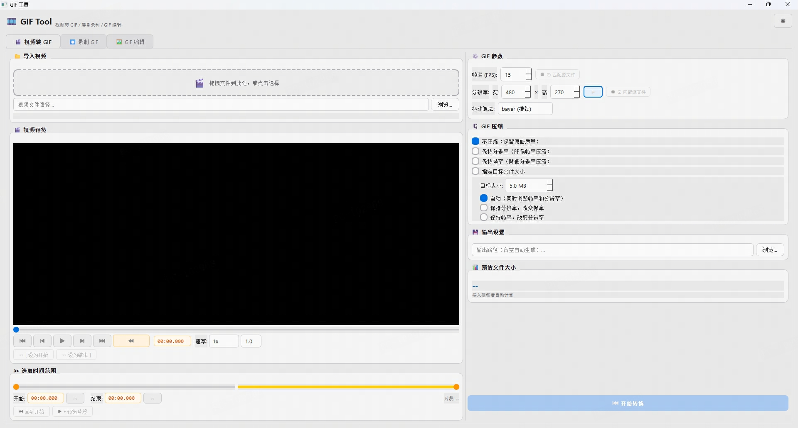
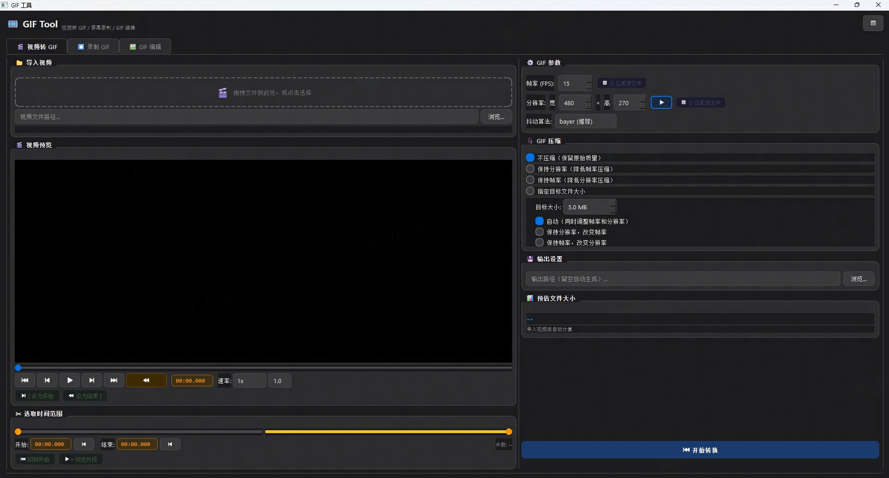
支持两种方式导入视频文件：
| 方式 | 操作 |
|---|---|
| 拖拽 | 将视频文件直接拖拽到左侧虚线框内 |
| 浏览 | 点击「浏览」按钮，在文件对话框中选择视频 |
支持格式：MP4 MOV AVI MKV WMV FLV 等主流视频格式。
视频导入后，左侧区域显示视频预览播放器，可使用以下控件操作：
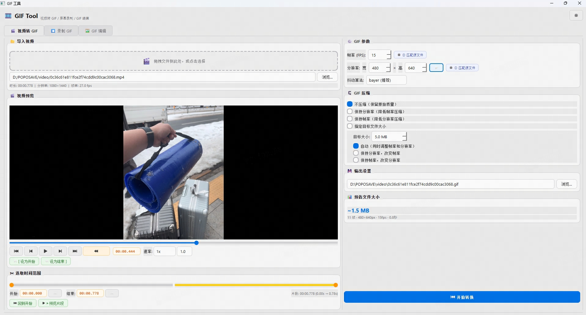
| 按钮 | 功能 |
|---|---|
| 播放 / 暂停 | 控制视频播放状态 |
| 上一帧 / 下一帧 | 精确逐帧查看 |
| 回到开头 / 跳到结尾 | 快速定位到视频首尾 |
| 倒放 | 切换正向/倒向播放 |
| 音量滑块 | 调整预览音量 |
「选取时间范围」区域用于确定 GIF 的内容片段：
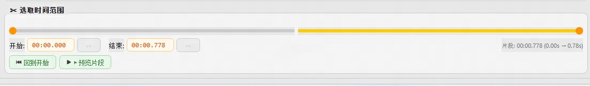
选好范围后，可使用快速预览按钮确认效果：
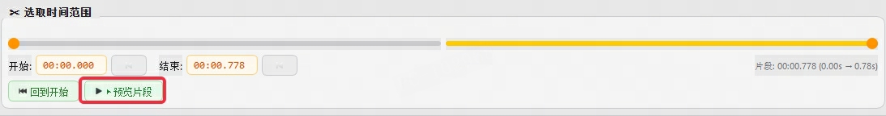
| 按钮 | 功能 |
|---|---|
| 回到开始 | 将播放器跳至片段开始时间并暂停，方便查看起始帧 |
| 预览片段 | 从片段开始播放至结束时自动暂停，直观预览最终 GIF 效果 |
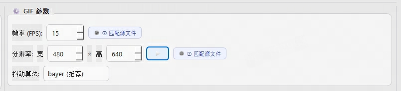
| 参数 | 说明 | 建议值 |
|---|---|---|
| 帧率 (FPS) | 每秒帧数。GIF 格式上限为 50fps，超过 50 自动截断 | 15 ~ 24 fps |
| 宽度 | 输出 GIF 宽度（像素），高度填 -1 表示按比例自动计算 | 480 ~ 720px |
| 高度 | 手动指定高度；-1 为自动等比缩放 | -1（自动） |
| 抖动算法 | bayer：速度快、文件小；sierra2：更柔和；none：无抖动 | bayer（推荐） |
| 锁定比例 | 开启后调整宽度时高度自动等比同步 | 建议开启 |
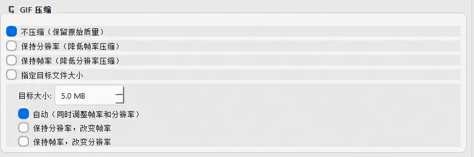
| 模式 | 说明 | 适合场景 |
|---|---|---|
| 不压缩 | 直接按设定参数转换 | 对文件大小无要求时 |
| 保持分辨率，降低帧率 | 保持画面清晰度，通过降低帧数减小体积 | 画面精细度优先 |
| 保持帧率，降低分辨率 | 保持动画流畅度，通过缩小尺寸减小体积 | 动作流畅度优先 |
| 指定目标大小 | 自动二分搜索，同时调整帧率和分辨率 | 微信/邮件等有大小限制的平台 |
| 指定大小（保持分辨率） | 仅调整帧率以达到目标大小 | 有尺寸要求且大小受限 |
| 指定大小（保持帧率） | 仅调整分辨率以达到目标大小 | 有流畅度要求且大小受限 |
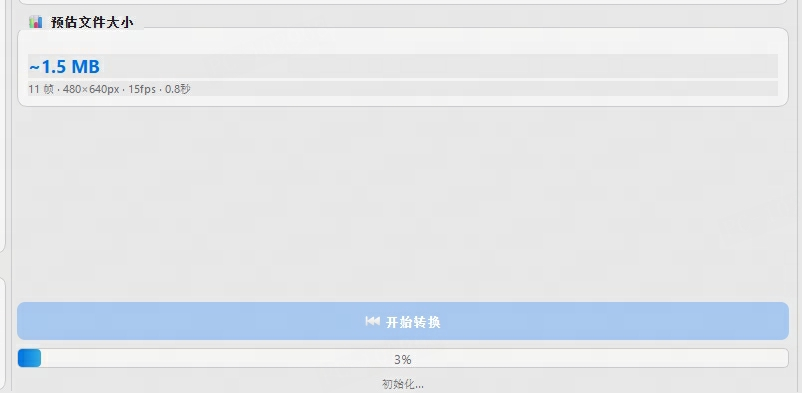
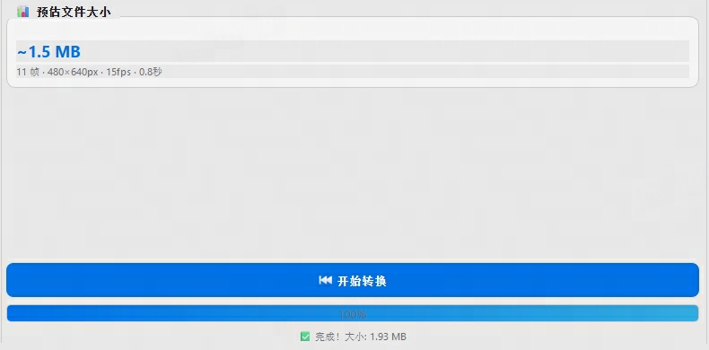
切换到顶部「录制 GIF」标签页，可直接录制屏幕内容并转换成 GIF。
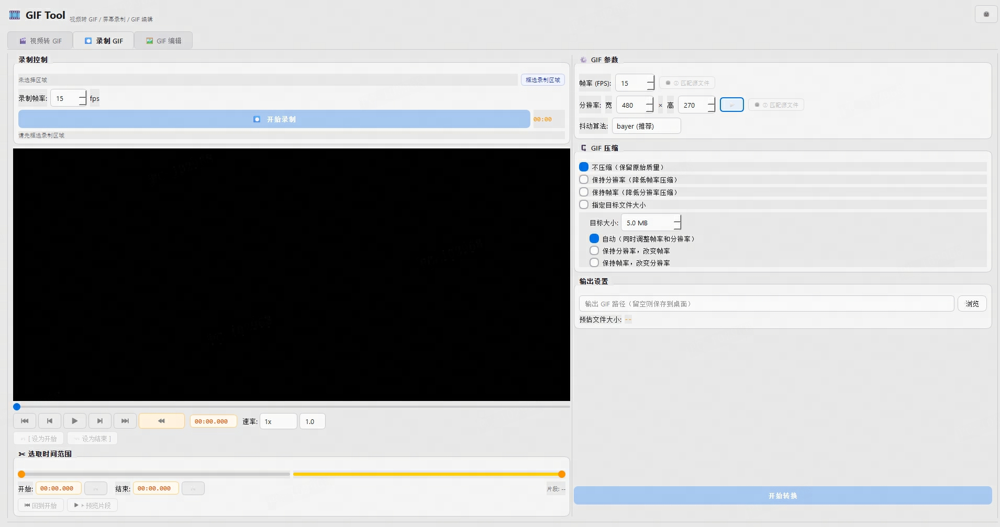
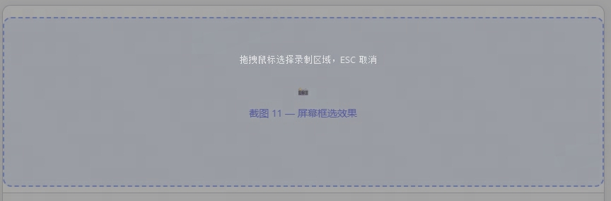
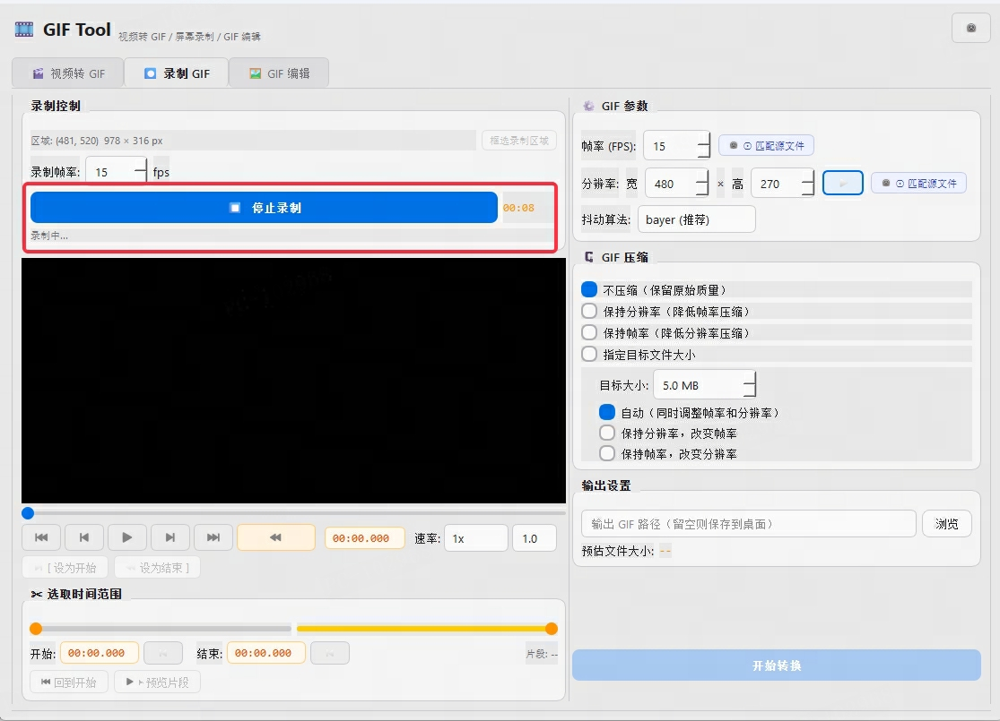
录制完成后，界面与「视频转 GIF」完全一致，可进行：
点击右上角的设置按钮，展开设置菜单：
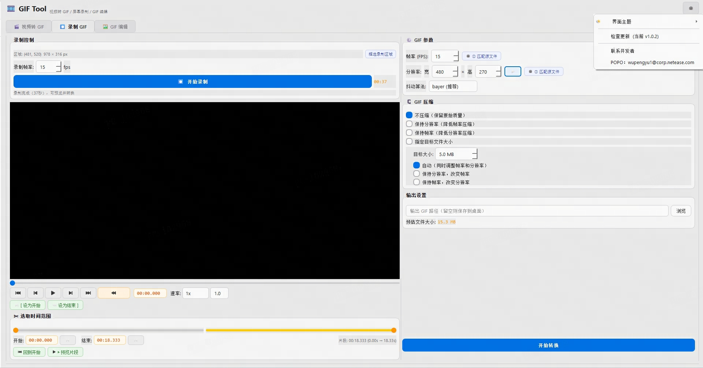
| 菜单项 | 功能 |
|---|---|
| 界面主题 | 子菜单中选择「浅色」或「深色」，立即生效 |
| 检查更新 | 手动触发检查 GitHub 最新版本，有新版本时弹出下载提示 |
| 使用说明文档 | 打开本文档 |
| 联系开发者 | 显示开发者联系方式：POPO wupengyu1@corp.netease.com |
A：通常是帧率设置过低导致。尝试提高「帧率」参数（建议 15~24 fps）。如果源视频帧率是 60fps，GIF 最高只能输出 50fps，但视觉上不会有明显差异。
A：工具已自动检测视频旋转元数据并修正。如果仍有异常，请确认使用的是最新版本（v1.0.2+）。
A：工具已内置每日缓存机制，每台电脑每天只会查询 GitHub API 一次。如处于公司内网导致无法访问，可忽略该提示，不影响工具正常使用。
A：录制完成后需要等待几秒钟的编码过程，编码完成后视频会自动加载到预览窗口。若长时间没有内容，可检查磁盘剩余空间是否充足。
A：工具已通过 Windows 8.3 短路径和临时文件两层机制支持中文路径，请确认使用最新版本（v1.0.2+）。
A：该模式最多进行 9 次迭代搜索最优参数，耗时是普通模式的数倍，属于正常现象。如对速度有要求，建议使用「保持分辨率」或「保持帧率」模式替代。